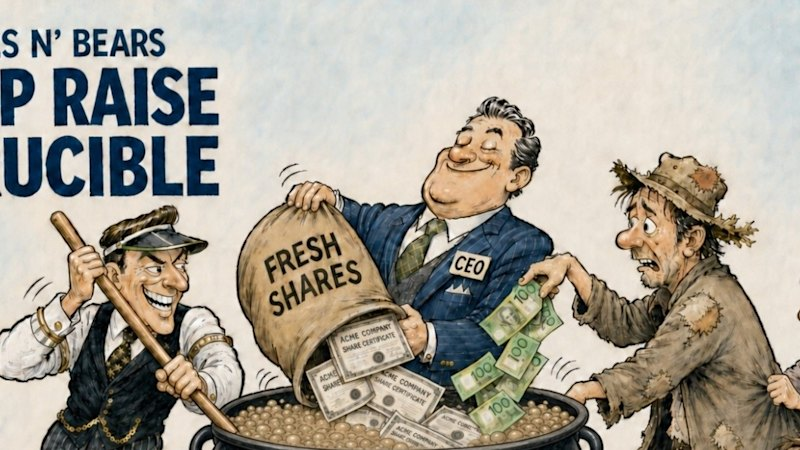
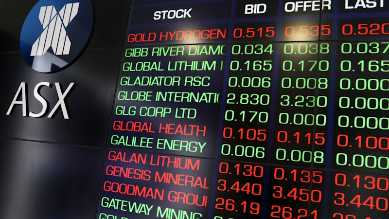
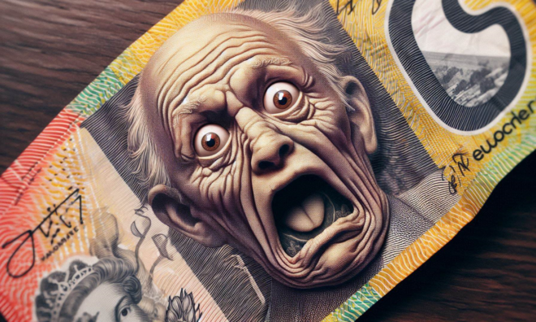

01 / EXECUTIVE BRIEF
What matters now
02 / SECTOR INTELLIGENCE
Signals across the board
Financials / Banks
Bearish
Implication: Rising unemployment combined with severe house price falls and hawkish RBA policy significantly increases the risk of bad debts for major lenders (CBA.AX, WBC.AX).
Consumer Discretionary / Retail
Bearish
Implication: Financial struggles among renters and mortgagees caught in an interest rate pincer will likely crush retail sales and hit consumer stocks (WES.AX, WOW.AX).
Materials / Mining (Gold)
Bullish
Implication: Strong drilling results from junior gold miners present speculative opportunities in microcaps (AUE.AX, ZNC.AX) amidst broader macro uncertainty.
Real Estate / Construction
Bearish
Implication: Construction site closures due to funding shortages and historic house price declines severely impact residential developers and building material suppliers.
Consumer Discretionary / Gaming
Bearish
Implication: Continued suspension of The Star's Sydney casino licence indicates prolonged regulatory and operational headwinds (SGR.AX).
03 / RISK ASSESSMENT
Known downside
RBA Policy Error (Stagflation)
Overweight defensive sectors like healthcare (CSL.AX) and avoid highly leveraged consumer stocks.
Housing Market Correction
Underweight major banks exposed to domestic mortgages and residential construction stocks.
Construction Sector Insolvencies
Avoid direct equity exposure to residential developers and associated service providers.
Currency Depreciation (AUD Drop)
Rotate into offshore earners whose revenues benefit from translation into a weaker AUD.
04 / POSITIONING
Portfolio responses
Opportunities
Junior Gold Explorers
Outstanding drill results from WA and West African corridors offer high alpha potential isolated from domestic macro decay.
USD Earners and Global Healthcare
A falling Australian dollar will flatter the translated earnings of globally diversified blue-chips.
Investment Banks / Brokers
A massive $2.7B capital raising torrent provides strong advisory and underwriting fee pipelines.
Defensive
Underweight Domestic Banks and Retail
Rising unemployment, rate hikes, and severe house price falls create a perfect storm for bad debts and collapsed consumer spending.
Avoid Regulatory and Distressed Gaming
Continued suspension of casino licenses indicates ongoing compliance costs and lack of revenue visibility.
Trim Broad ASX 200 Exposure
Climbing bond yields are driving consecutive weekly losses on the benchmark, warranting higher cash weightings.
05 / OUTLOOK
The road ahead
1—3 MONTHS
Bearish. Equities will likely face continued pressure from climbing bond yields and a stubbornly hawkish RBA. We expect elevated volatility as the domestic consumer absorbs the shock of rising unemployment and static interest rates.
6—12 MONTHS
Neutral to Bearish. The unfolding property market correction and rising structural unemployment could force an eventual RBA pivot, but the lag effect means corporate earnings (especially in banking and retail) will suffer over the next 6-12 months.
Key catalysts
Watch list
06 / SOURCE INTELLIGENCE
Reporting behind the view

Cap Raise Crucible: $2.7B torrent keeps brokers on the boil
VIEW STORY ↗Star’s Sydney casino licence to stay suspended
VIEW STORY ↗
ASX suffers fourth straight losing week as bond yields climb
VIEW STORY ↗Australians are caught in an interest rate pincer
VIEW STORY ↗